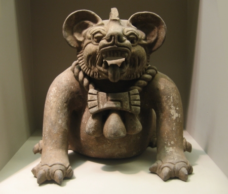

Monday, December the 5th, 2011
back to: title, date or indexes
The whole point of this advent calendar hoo-ha is that we are counting towards the celebration of the birth of sweet baby Jesus. Later, grown to mangodhood, Jesus asserted that “I am the way, the truth, and the life: no man cometh unto the Father, but by me”, so it may be considered inappropriate to include a picture of a rival god in our calendar. But that's just what we're going to do here at Hooting Yard, inspired by the spirit of diverse vibrancy, or vibrant diversity, or whatever it is they inculcate into tinies in their community education hubs these days.
Here, courtesy of Bushwick Policy, is a Mayan bat-god, eerily similar to the hideous bat-god Fatso.
